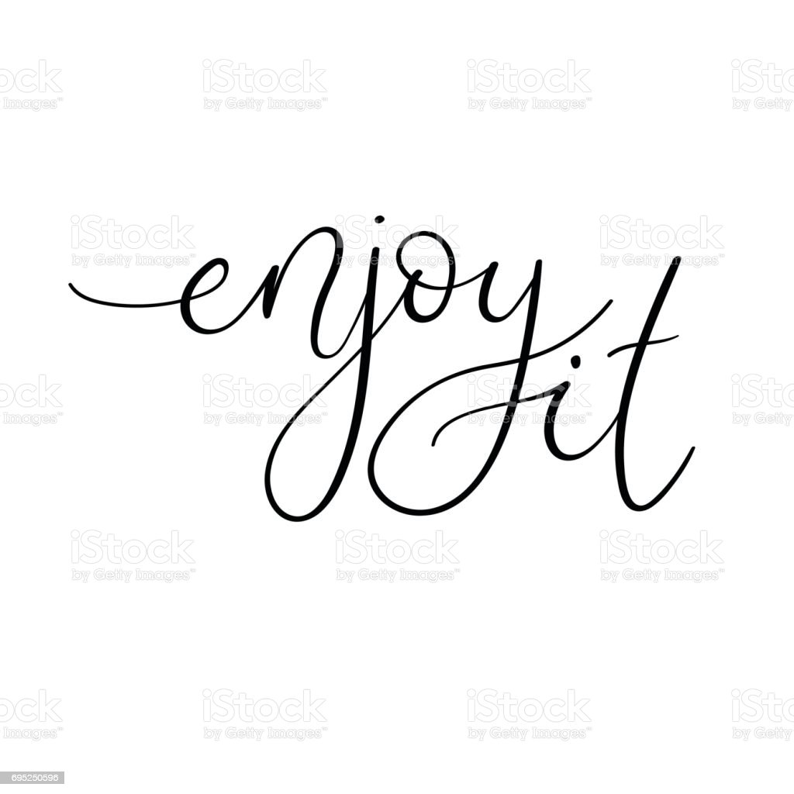
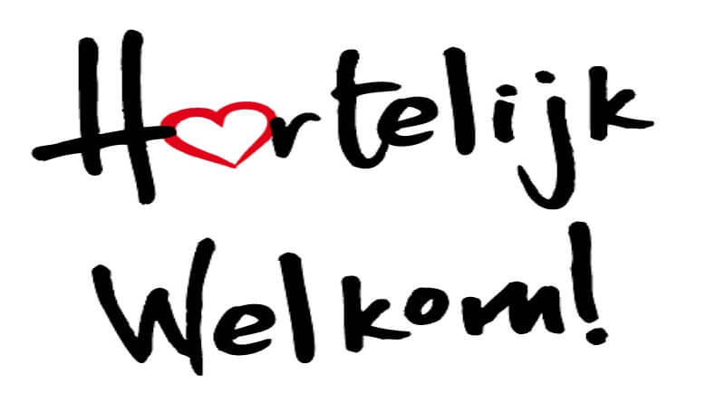

Informatie over ons bedrijf
Wij zijn in 2017 begonnen met dit bedrijf. We vonden het heel leuk om hoesjes te maken en dachten er daarom ook over na om ze verkopen. Daarom even de meest gestelde vragen hierbij beantwoord!
Hoe maken we ons hoesjes?
We kopen basic hoesjes in om met ons speciale print machines.
Waar maken jullie de hoesjes?
Op ons kantoor. We werken daar met zn tweeën eraan.
Waar is jullie kantoor?
In Rotterdam.
Loopt jullie webshop goed?
Jazeker! we hebben al meer dan 10.000 hoesjes verkocht.
Kan ik de hoesjes retourneren?
Nee, helaas is dat nog niet mogelijk.
Als u vragen heeft, aarzel dan niet om contact met ons op te nemen.
Email: 113639@emmauscollege.nl
Telefoonnummer: +31 6 85389519
